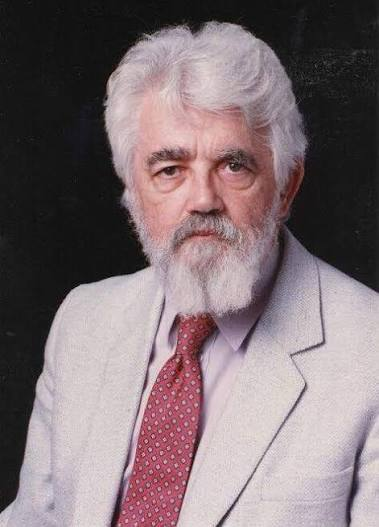
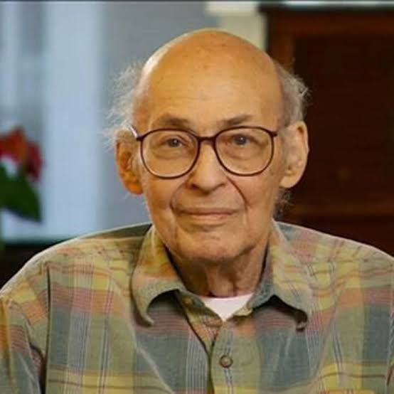
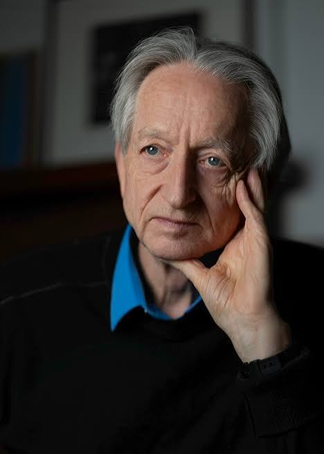
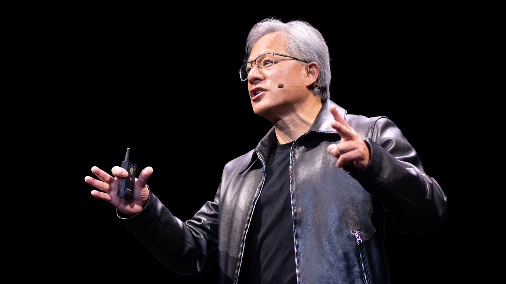

<!DOCTYPE HTML PUBLIC "-//W3C//DTD HTML 4.01 Frameset//EN" "http://www.w3.org/TR/html4/frameset.dtd"
<html>
<head>
<title>PERSONAJES INTERESANTES RELACIONADOS CON LA IA</title>
<link href="estilodos.css" rel="stylesheet" type="text/css"></head>
</html>
<body>
<header> PERSONAJES INTERESANTES RELACIONADOS CON LA IA</header>

<center><div id="html"></div></center>
<center><BIG>John McCarthy</BIG></center>

<p><center> Informático estadounidense que acuñó oficialmente el término "inteligencia artificial" en 1956</center><p>


<center><div id="html"></div></center>
<center><BIG>Marvin Minsky</BIG></center>
<p><center> Cofundador del laboratorio de IA del MIT y pionero en redes neuronales, robótica y teoría de la mente.</center></p>


<center><div id="html"></div></center>
<center><BIG>Geoffrey Hinton</BIG></center>
<p><center> Psicólogo cognitivo y científico de la computación. Popularizó el algoritmo de retropropagación y es considerado uno de los padres del aprendizaje profundo moderno.</center></p>


<center><div id="html"></div></center>
<center><BIG>Jensen Huang</BIG></center>
<p><center>  Cofundador y director ejecutivo de Nvidia, cuyos chips de procesamiento gráfico (GPU) impulsaron la infraestructura de hardware detrás de la revolución de la IA actual.</center></p>


</body>